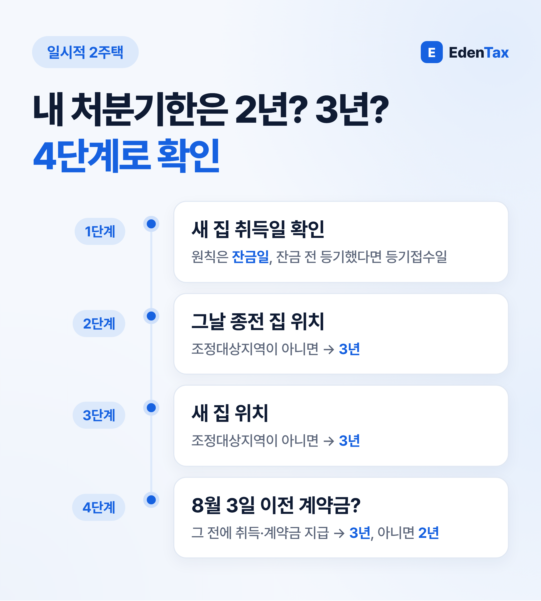
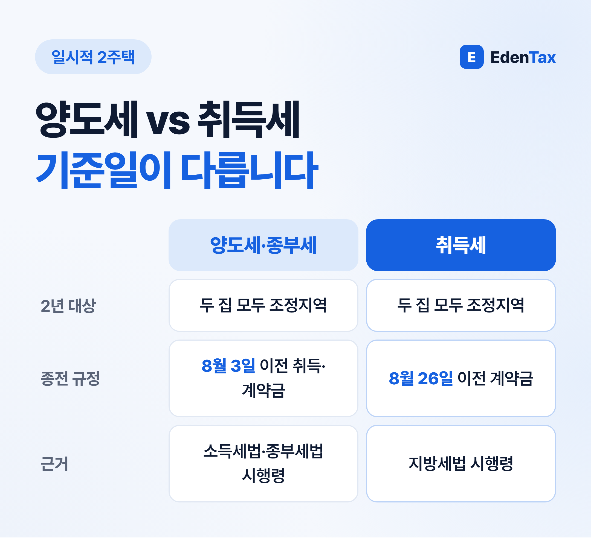
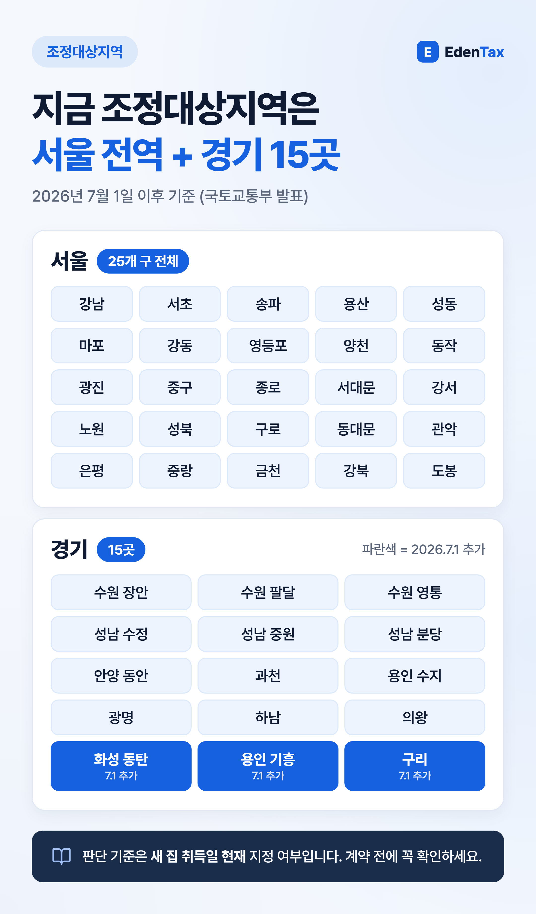

조정대상지역에서 조정대상지역으로 집을 갈아타는 1세대라면, 2026년 10월 1일부터는 종전 집 처분기한이 3년이 아니라 2년일 수 있습니다. 다만 새 집을 언제 계약했는지에 따라 아직 3년이 적용되는 분도 많습니다. 아래 순서대로 내 기한을 확인해 보세요.

개정 내용 한눈에 보기
| 구분 | 2026년 9월 30일까지 | 2026년 10월 1일부터 |
|---|---|---|
| 종전 집·새 집 모두 조정대상지역 | 3년 | 2년 |
| 그 밖의 경우 | 3년 | 3년 |
근거는 소득세법 시행령 제155조 제1항입니다(2026년 9월 30일 개정, 10월 1일 시행). 판단 시점은 새 집 취득일 현재이고, 취득일은 원칙적으로 잔금일입니다. 잔금 전에 소유권이전등기를 했다면 등기접수일이 기준이 됩니다.
언제 계약했느냐가 가장 중요합니다
부칙에 따라 2년 규정은 2026년 8월 4일 이후 새 집을 취득하고 10월 1일 이후 종전 집을 파는 경우부터 적용됩니다. 2026년 8월 3일 이전에 새 집(분양권 등 취득할 수 있는 권리 포함)을 취득했거나 매매계약을 하고 계약금을 낸 사실이 증명서류로 확인되면 종전대로 3년입니다.
또 새 집이 있는 지역이 조정대상지역으로 지정되기 전에 그 집을 취득했거나 계약금을 냈다면 2년 규정에서 제외됩니다.
경우별 예시
아래는 이해를 돕기 위한 가상의 예시입니다. 모두 종전 집을 산 지 1년이 지난 뒤 새 집을 샀다고 가정했습니다.
| 종전 집 | 새 집 | 계약·잔금 | 양도세 처분기한 |
|---|---|---|---|
| 성남 분당구 | 서울 강동구 | 2026년 9월 계약·잔금 | 2년 |
| 성남 분당구 | 서울 강동구 | 7월 계약금 → 10월 잔금 | 3년 (8월 3일 이전 계약금) |
| 서울 강동구 | 수원 권선구 (조정대상지역 아님) | 2026년 9월 | 3년 |
취득세는 기준일이 8월 26일입니다
같은 날 지방세법 시행령(제28조의5)과 종합부동산세법 시행령(제4조의2)도 함께 바뀌어, 두 집이 모두 조정대상지역이면 일시적 2주택 기간이 2년으로 줄었습니다. 그런데 취득세는 경과규정 기준일이 다릅니다.
- 양도세·종부세: 2026년 8월 3일 이전 취득·계약금 지급이면 종전 규정
- 취득세: 2026년 8월 26일 이전 매매계약(분양계약 포함)·계약금 지급이면 종전 규정
예를 들어 2026년 8월 10일에 새 집 계약금을 냈다면, 취득세는 종전 규정을 따르지만 양도세는 2년 규정이 적용될 수 있습니다. 8월에 계약하신 분은 세목마다 따로 확인하셔야 합니다.

2026년 10월 현재 조정대상지역

국토교통부 발표(2026년 6월 30일)에 따르면 7월 1일 이후 조정대상지역은 서울 25개 구 전체와 경기 15곳입니다. 경기 15곳 중 12곳(수원 장안·팔달·영통, 성남 수정·중원·분당, 안양 동안, 과천, 용인 수지, 광명, 하남, 의왕)은 2025년 10월 16일, 화성 동탄·용인 기흥·구리는 2026년 7월 1일에 지정되었습니다.
기한만 지킨다고 비과세는 아닙니다
- 종전 집을 산 날부터 1년 이상 지난 뒤 새 집을 취득해야 합니다.
- 종전 집은 2년 이상 보유해야 하고, 살 때 조정대상지역이었다면 2년 이상 거주해야 합니다.
- 양도가액이 12억 원을 넘으면 비과세가 되어도 12억 원 초과분에는 양도세가 과세됩니다.
세무사 한마디
갈아타기 상담에서 "3년 안에만 팔면 된다고 들었어요"라는 말씀을 여전히 많이 듣습니다. 8월 이후 새 집을 계약하셨다면 매도 일정을 3년에 맞춰 두기 전에, 내 기한이 2년인지부터 먼저 확인하시길 권합니다.
— 정재욱 세무사